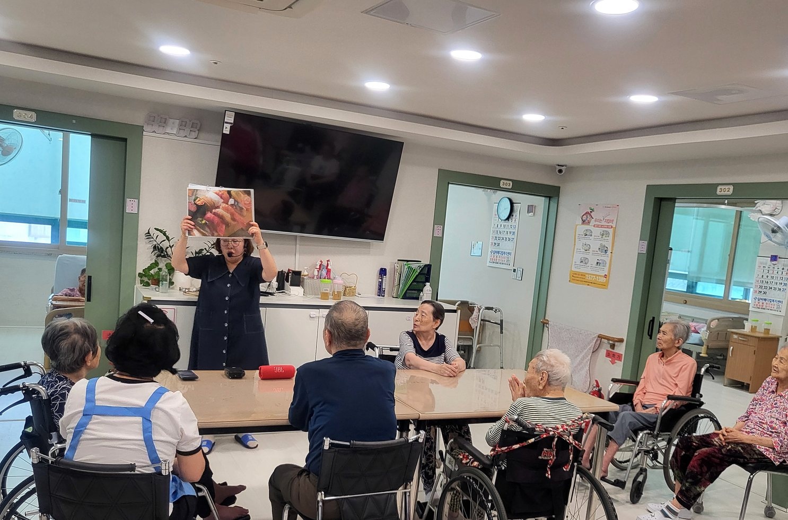
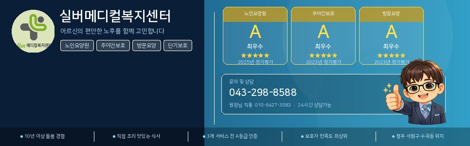

요양원
장기적인 생활 돌봄이 필요한 어르신께 안정적인 생활 공간과 일상 지원을 제공합니다.
청주 서원구 장기요양 통합 상담
어르신의 생활 리듬과 가족의 걱정을 함께 살피며, 편안한 하루가 이어지도록 돕습니다.
센터 소개
실버메디컬복지센터는 어르신의 존엄과 일상의 연속성을 중요하게 생각합니다. 식사, 휴식, 프로그램, 위생, 건강 상태를 한 번의 일정이 아니라 하루 전체의 흐름으로 살핍니다.
보호자께는 필요한 정보를 숨기지 않고 안내하며, 어르신께는 낯선 기관이 아니라 편안한 생활 공간이 되도록 작은 부분까지 꾸준히 관리하겠습니다.
서비스 안내
상황에 따라 시설급여와 재가급여를 함께 살펴보고, 보호자 부담을 줄이는 방향으로 안내합니다.
장기적인 생활 돌봄이 필요한 어르신께 안정적인 생활 공간과 일상 지원을 제공합니다.
낮 동안 센터에서 식사, 프로그램, 휴식, 이동 지원을 받으실 수 있습니다.
어르신 댁으로 요양보호사가 방문하여 신체활동과 일상생활을 지원합니다.
일시적인 돌봄 공백이나 회복기 돌봄이 필요할 때 짧은 기간 이용하실 수 있습니다.
어르신의 상태와 가족 일정에 맞춰 여러 재가 서비스를 함께 살펴볼 수 있습니다.
보호자 상담 흐름
장기요양등급, 현재 생활 상태, 보호자 상황을 확인한 뒤 이용 가능한 서비스를 함께 정리합니다.
시설과 생활
실제 기관 사진을 홈페이지용으로 정돈해 공간감과 생활 분위기를 자연스럽게 담았습니다.





보호자에게 드리는 약속

네이버 블로그
프로그램, 식사, 생활 소식, 보호자 안내 자료를 블로그에 정리해두고 있습니다. 홈페이지에서는 핵심 안내를, 블로그에서는 더 자세한 이야기를 보실 수 있습니다.
상담 문의
입소 상담, 주간보호 이용 가능 여부, 방문요양 상담을 전화 또는 카카오톡 채널로 문의하실 수 있습니다. 모바일에서는 전화 연결, PC에서는 카카오톡 채널로 안내됩니다.